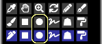

paint with various shapes (rectangle, circle, lasso, polygon)
You can select the "Rectangle" tool by clicking the ■ button in the "Select Tool" window.

Example of painting with RGBA (44,134,245,150)

Example of painting with "Rounded corners" checked and set to 60 %

Example of painting with the "Frame" checkbox turned on

If you check the "Aspect ratio" checkbox, you can fix the ratio of the height and width of the rectangle.
If you check the "px" checkbox, you can specify the height and width of the rectangle in px units.
"Circle" tool¶

Example of painting with RGBA (44,134,245,150)

Example of painting with the "Softer" radio button selected

Example of painting with "Ellipse" checked and set to 40

Example of painting with the "Softer" radio button selected

"Lasso" tool¶

Example of painting without blurring (RGBA (44,134,245,255))

Example of painting with blur 15x15 px (RGBA (44,134,245,150))

Example of painting with the "Visualization mode" checkbox turned on (blur 3x3 px)

"Polygon" tool¶

With the "Polygon" tool, the clicked position becomes the vertex of the polygon.
You can undo up to one.

All of these painting methods can also be painted in "Blending mode".
For example, you can make it darker by painting with the blending mode "Multiply".
Also, for example, you can make it brighter by painting it with a whitish yellow in the blending mode "Add(Glow)".